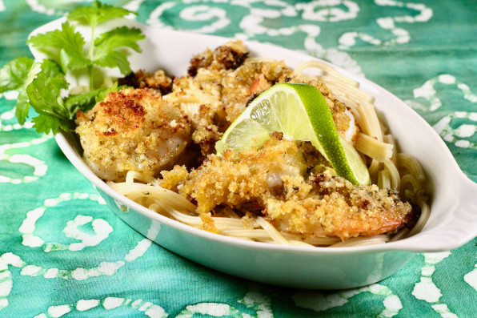

Cilantro-Lime Baked Shrimp

A combo of baked Shrimp, Pasta and Parmesan Cheese making a flavor pallette of Italian with a South-Western US feel!
This dish has a suprisingly light feel to it for how much flavor is packed in. A light serving of pasta sprinkled with cilantro and lime make for a refreshing mixture. The baked shrimp and parmesan cheese just seal the deal on this heart healthy meal!
Ingredients
- ⅓ cup olive oil
- ⅓ cup chopped fresh cilantro
- 4 cloves garlic, peeled
- 1 small lime, juiced
- 1 teaspoon garlic and herb seasoning (such as Badia® Complete Seasoning®)
- ⅛ teaspoon cayenne pepper
- 1 pound uncooked medium shrimp, peeled and deveined
- 3 slices white bread, crusts removed, toasted
- butter-flavored cooking spray
Directions
- Preheat the oven to 450 degrees F (230 degrees C).
- Combine oil, cilantro, garlic, lime juice, seasoning, and cayenne in the bowl of a food processor; blend well. Toss with shrimp in a bowl. Transfer into a glass 8x8-inch baking dish.
- Process toasted bread in a food processor until crumbed. Top shrimp with bread crumbs and spray with a generous coating of cooking spray.
- Bake in the preheated oven until bubbly and shrimp are bright pink, about 15 minutes.
Home